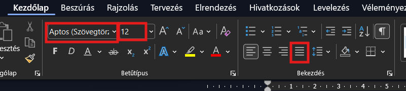
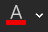
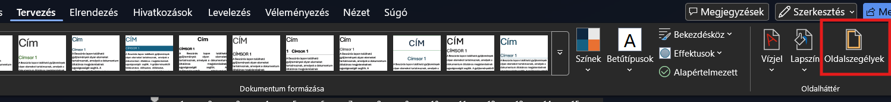

Word önálló munka
Ebben a dokumentumban önálló munkához találsz feladatokat. Sorban haladj, mert úgy növekszik a nehézség! Ha érted a feladatokat, akkor az Önálló feladat részben található leírás szerint gyorsan tudsz haladni. Ha valami mégsem tiszta, akkor a Könnyített lépések (segítséggel) részben találsz extra leírást és képeket.
Nyers szöveg, amivel dolgozni fogsz
A Mars-kolonizáció küszöbén
Az emberiség évtizedek óta álmodik a Vörös Bolygó meghódításáról. A Mars a Földhöz leginkább hasonló bolygó a Naprendszerben, de a letelepedés komoly akadályokba ütközik. A legfőbb kihívások a következők.
Extrém hőmérséklet, a felszínen átlagosan -60 °C van.
Vékony légkör, ami 95%-ban szén-dioxidból áll.
Erős kozmikus sugárzás a mágneses mező hiánya miatt.
Alacsony gravitáció, ami mindössze a földi 38%-a.
A tudósok már dolgoznak a megoldásokon. A tervek között szerepel a földalatti vagy 3D nyomtatóval készült bázisok építése, az oxigén kinyerése a marsi jégből, és a növénytermesztés zárt üvegházakban. Az első emberes missziók a 2030-as évekre várhatók. Addig még rengeteg technológiai és biológiai problémát kell megoldanunk ahhoz, hogy a Mars az emberiség második otthonává válhasson.
1. feladat: dokumentum létrehozása, szöveg beillesztése
Önálló feladat
Másold ki a fenti szöveget! Nyisd meg a Wordöt, hozz létre egy új üres dokumentumot, és illeszd be a kimásolt szöveget! A fájlt mentsd el a saját mappádba Mars saját neved néven!
Könnyített lépések (segítséggel)
- A szöveg másolása: az egér segítségével jelöld ki a fenti szöveget a böngészőben! Jobb egérgombbal kattintva kiválaszthatod a Másolás lehetőséget, de az is jó, ha megnyomod a ctrl + c billentyűkömbinációt.

- Dokumentum készítése és a szöveg beillesztése: keresd ki a Wordöt, és nyisd meg, majd kattints az Üres dokumentum lehetőségre! itt nyomd meg a ctrl + v billentyűkombinációt!
- A dokumentum mentése: kattints a mentés gombra, vagy nyomd meg a ctrl + s gombot! A bal oldalon válaszd ki a Tallózás gombot, majd a felugró párbeszédablakban keresd meg a saját meghajtódat az Ez a gép alatt! Írd be a fájlnevet: Mars saját neved, majd kattints a Mentés gombra, vagy nyomd meg az Enter-t

2. feladat: alapbeállítások és a cím formázása
Önálló feladat (haladóknak)
Állítsd be a dokumentum minden margóját 2,75 cm-re! Az egész szöveg betűtípusa legyen Arial, a betűméret 12-es, és állítsd sorkizártra az igazítást! A címet formázd meg: legyen 16-os méretű, félkövér, középre zárt és sötétpiros színű! A teljes dokumentumban kapcsold be az automatikus elválasztást!
Könnyített lépések (segítséggel)
- Margók: kattints a fenti menüben az Elrendezés fülre, majd bal oldalon a Margók gombra. Válaszd az Egyéni margók... opciót, és írd be mind a négy helyre (alsó, felső, jobb, bal), hogy 2,75.


- Automatikus elválasztás: az Elrendezés fülön keresd meg az Elválasztás menüt, és válaszd ki a párbeszédablakban az Automatikus lehetőséget!
- Kijelölés és betűtípus: nyomd meg a Ctrl + A billentyűkombinációt (ez mindent kijelöl). A Kezdőlap fülön keresd meg a betűtípusokat, válaszd ki az Arial-t, a mellette lévő számnál pedig válaszd a 12-t. Ugyanitt kattints a Sorkizárt ikonra (a kis vízszintes vonalak, amik mindkét oldalon egyenesek).

- Cím: keresd meg a címet, és szúrj be utána egy új sort! A címed ennyi lesz: A Mars-kolonizáció küszöbén, ez után kell Enter-t nyomni. Jelöld ki csak a legelső sort ("A Mars-kolonizáció küszöbén"). A Kezdőlap fülön állítsd a méretet 16-ra. Kattints a F (félkövér) gombra, majd a Középre igazítás ikonra. Végül az

betű melletti színválasztó nyilacskánál keress egy sötétpiros színt.
3. feladat: felsorolás és sorközök
Önálló feladat (haladóknak)
Keresd meg a szövegben a marsi letelepedés kihívásait felsoroló részt! Törd külön bekezdésekbe a négy kihívást, és alakítsd őket felsorolássá! A felsorolásjel legyen egyedi (például négyzet vagy pipa). Az egész felsorolásban állítsd be a sorközt 1,5-re, a bekezdések előtti és utáni térközt pedig egyaránt 6-6 pt-ra!
Könnyített lépések (segítséggel)
- Sorok törése: keresd meg "A legfőbb kihívások a következők." mondatot. Az utána jövő mondatok elé (Extrém..., Vékony..., Erős..., Alacsony...) kattints oda az egérrel, és nyomj egy Enter-t, hogy mindegyik külön sorba kerüljön.
- Felsorolás: jelöld ki ezt a négy új sort. A Kezdőlap fülön kattints a Felsorolás ikonra (
 ). Ha a mellette lévő kis lefelé mutató nyílra kattintasz, választhatsz más formát is (pl. négyzetet).
). Ha a mellette lévő kis lefelé mutató nyílra kattintasz, választhatsz más formát is (pl. négyzetet).
- Sorköz: hagyd kijelölve a szöveget! A Kezdőlap fülön keresd meg a Sorköz és bekezdésköz () ikont (kék fel-le mutató nyilak vízszintes vonalakkal). Válaszd a 1,5-ös értéket.
- Térköz: kattints ennél a résznél a
 gombra! A felugró párbeszédablakban a Térköz résznél írd be az Előtte és az Utána részbe is, hogy 6 pt! Ha megvagy, nyomd meg az OK-t.
gombra! A felugró párbeszédablakban a Térköz résznél írd be az Előtte és az Utána részbe is, hogy 6 pt! Ha megvagy, nyomd meg az OK-t. 
4. feladat: kép beillesztése és formázása
Önálló feladat (haladóknak)
Keress az interneten egy képet a Marsról vagy egy marsjáróról! Szúrd be a dokumentum második vagy harmadik bekezdése mellé. A kép szélessége legyen pontosan 6 cm. Állíts be négyzetes szövegkörbefolyást, és igazítsd a képet a jobb margóhoz. Végezetül adj a képnek egy lágy szél effektust (Finom élek menüpont; pl. 10 pt) vagy egy ízléses szegélyt!
Könnyített lépések (segítséggel)
- Kép beszúrása: kattints a szövegben oda, ahová a képet szeretnéd. Menj a Beszúrás fülre, válaszd a Képek, majd az Online képek... lehetőséget. Írd be: "Mars", és válassz egy neked tetszőt.
- Hogy ne ugorjon el a szöveg: miután beszúrtad, kattints a képre. Megjelenik mellette egy kis ikon (
 , Elrendezési beállítások). Kattints rá, és válaszd a Négyzetes (Square) lehetőséget. Most már szabadon mozgathatod az egérrel a jobb oldalra!
, Elrendezési beállítások). Kattints rá, és válaszd a Négyzetes (Square) lehetőséget. Most már szabadon mozgathatod az egérrel a jobb oldalra!
- Méret és effektus: kattints a képre, majd a fenti menüsorban a Képformátum fülre. A jobb szélen a Szélességnél írd át a számot 6-ra. Ugyanezen a fülön keresd meg a Képeffektusok gombot, menj a Finom élek opcióra, és válaszd a 10 pontost.

5. feladat: élőláb és szegély
Önálló feladat (haladóknak)
Szúrj be egy élőlábat! A bal oldalra írd be a saját neved, a jobb oldalra pedig az aktuális dátumot. Ha készen vagy, állíts be a dokumentumnak egy egyszerű, vékony oldalszegélyt!
Könnyített lépések (segítséggel)
- Élőláb megnyitása: kattints duplán a lap legalsó, üres részére. Megnyílik az élőláb szerkesztője.

- Név és dátum: írd be a neved a bal oldalra. Nyomd meg a billentyűzeten a Tab gombot (két egymással szembe mutató nyíl van rajta, a bal oldalon van) kétszer, amíg a kurzor a jobb szélre nem ugrik. Ide írd be a mai dátumot. Kattints duplán a lap közepére, vagy nyomd meg az escape-et (Esc) a bezáráshoz.
- Oldalszegély: kattints a fenti Tervezés fülre. A jobb szélen válaszd az Oldalszegélyek gombot. A felugró ablakban bal oldalon válaszd a Körbe opciót, majd nyomj OK-t.

6. feladat: a munka beadása
Add be a helyes néven elmentett munkát!
Mentsd el a munkádat, nyisd meg a Fájlkezelőt, és másold be a Dolgozatok megosztott meghajtóra! Ha beküldted, kérdezd meg, hogy megkaptam-e!